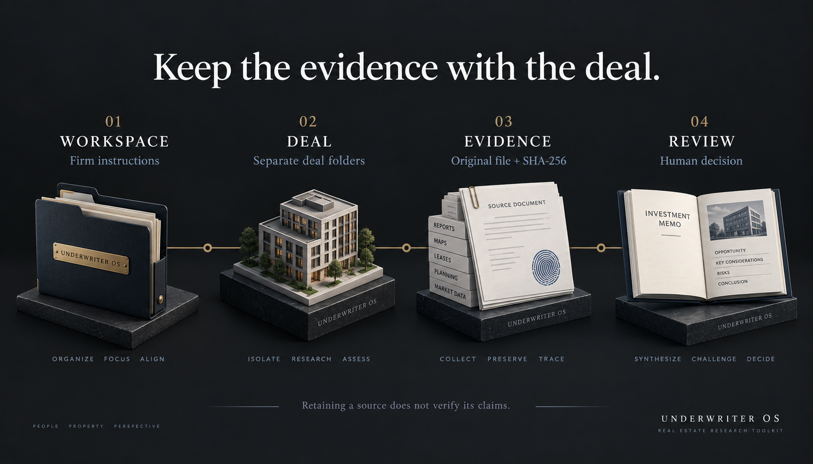

A home for your firm
Create firm instructions, references and a delivery manifest from a committed toolkit revision. Provider configuration starts empty.
REAL ESTATE RESEARCH / OPEN SOURCE
Give every deal a place to think. A practical research toolkit for firm context, source evidence and disciplined underwriting work.
MIT licensed · Local files · Your own AI and data access
Conceptual architectural imagery. Not an actual investment.
A TRACEABLE WAY TO WORK
The Python tools organize your work. The playbooks guide research. Your team supplies the evidence and reviews the conclusions.

Create firm instructions, references and a delivery manifest from a committed toolkit revision. Provider configuration starts empty.
Create an intake record and unfilled memo, market study and site templates. Existing deal slugs are protected from overwrite.
Copy a source document into the deal, recording its origin, publication date and SHA-256. Identical bytes reuse the source record.
Use the rigor standard to separate facts, assumptions and calculations. A retained document is not a verified claim.
THE WORKBENCH
Built for acquisition and development research, with a multifamily underwriting reference and reusable deliverable templates.
Read the source repository ↗Initialize a firm workspace. Create and list deals. Retain source files with provenance and checksums.
Deep research, site selection, market comps, investor sourcing, underwriting research, deal memos and pipeline guidance.
Site one-pager, market study, investment memo and sources log. The model reference explains metrics and source requirements; it is not an automated spreadsheet calculator.
CHOOSE YOUR STARTING POINT
Download a blank starter package. Open it in your local AI workspace, read AGENTS.md and complete the firm intake with your own objectives.
Download starter ZIP ↓Includes no customer data or completed analysis. Python 3 runs the local deal tools; AI subscriptions and data access are separate.
Explore a separately scoped configuration engagement for your research process, templates and provider setup. The underlying MIT toolkit remains free to use.
View configuration service details ↗Scope, access and acceptance criteria are agreed for each engagement. Downloading does not activate any service.
AFTER YOU EXTRACT THE ZIP
From the extracted underwriter-starter directory, replace the name and slug with your actual deal. Read scripts/WORKSPACE-QUICKSTART.md for source import instructions.
python3 scripts/deal_workspace.py \
--workspace . create \
--name "Your actual deal" \
--slug your-actual-deal
python3 scripts/deal_workspace.py \
--workspace . listNo. This is a downloadable toolkit of local Python utilities, Markdown instructions, references and templates. AI workflows depend on your chosen runtime and available authorized tools.
No. The package configures no providers and includes no customer data. Catalog entries describe optional tools; your firm must supply and authorize access. Source retention does not verify the underlying claims.
The toolkit is MIT licensed. Preserve the included license notice and review LICENSE for its terms. Optional configuration services are separate from the freely available software.
No. The initial templates are unfilled. Research, calculations and conclusions require current evidence and human review. This toolkit does not provide investment, legal, tax or securities advice.